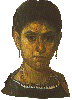

главная  персоналии
персоналии  Графиня де Диа
Графиня де Диа
главная |

Личность в историикраткая энциклопедияПроект «Личность в истории» посвящен людям — современникам грандиозных исторических событий, носителям редких качеств или людям, взгляды которых опередили их время. |
|||||
Коротко |
Статьи |
Персоналии |
Литература |
||
Графиня де Диа |
|||||
|
«Графиня де Диа была в свое время дама весьма умная и добродетельная, великой красоты и честного образа жизни, искушенная в поэзии и стихотворстве провансальском…» Жан де Нострдам, |
К. Коро. Читающая в венке из цветов. |
||||
Биографическая справкаГрафиня де Диа (конец XII в. — начало XIII в.) — одна из самых известных куртуазных поэтесс Окситании. Само существование подобных женщин-поэтесс противоречит традиционным взглядам на куртуазную любовь в которой женщина предстает недоступным божеством, а не активной участницей любовного дуэта. По известной стропровансальской «биографии» графиня де Диа была замужем за Гильемом де Пуатье. При этом она будто бы любила поэта Рамбаута д’Ауренга, «о котором … сложила много хороших песен». Документально эти данные не подтверждаются, поэтому истинные перипетии жизни графини де Диа остаются загадкой. Из творчестваМне любовь дарит отраду, Строит мне во всем преграду Злобный ропот ваш не стих, (Перевод Валентины Дынник) Я горестной тоски полна Напомнить бы ему сполна Вернитесь, мой прекрасный друг! (Перевод Валентины Дынник) Список литературы
|
|||||
|